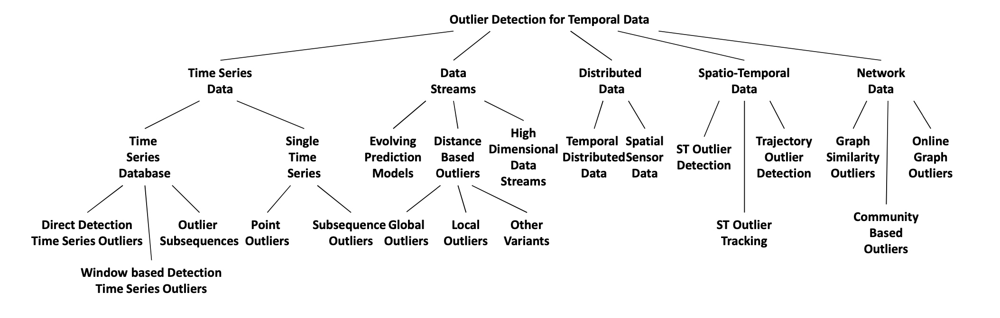
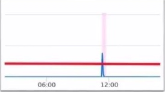
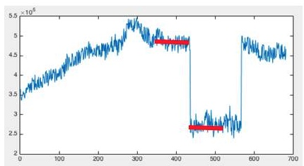
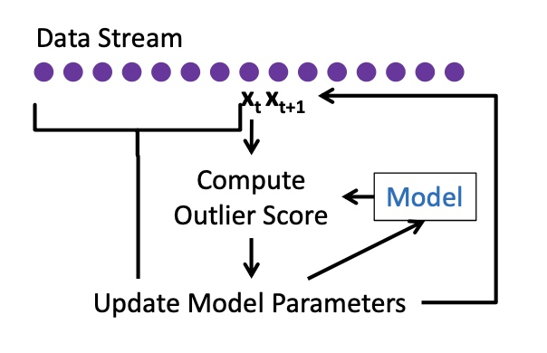
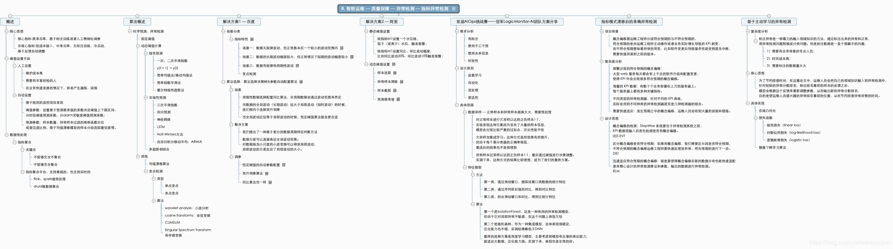
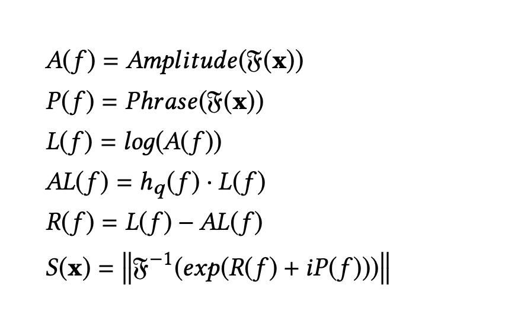
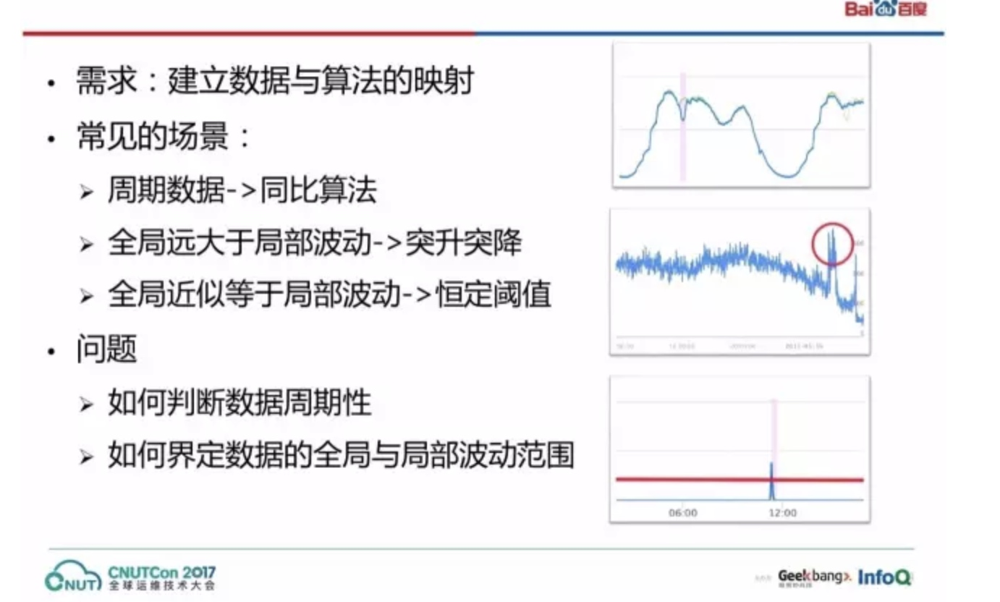
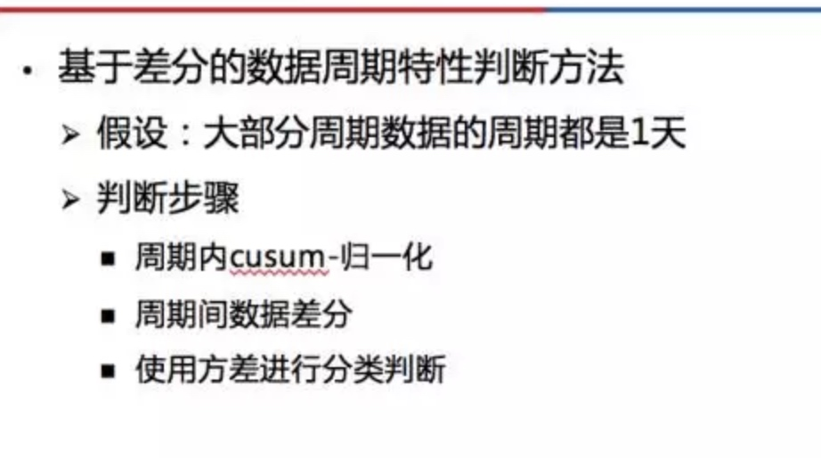

所属 Topic：机器学习 · 类型：概念
【异常检测2】时间序列#
| paper | year | ||
|---|---|---|---|
| Outlier Detection for Temporal Data: A Survey | 2014 | ||
| Time-Series Anomaly Detection Service at Microsoft | 2019 | ||
一 问题分类#

| Data Type | 示例场景 | 方法 | 方案 | 例子 |
|---|---|---|---|---|
| time series Database | 轨迹trace | 学习normal的model，然后找到异常 | 无监督判别方法 序列相似度 + 序列cluster | |
| 学习参数model，预测误差 | 无监督参数方法-（FSA, Markov，HMM | |||
| 看cell及其后续的趋势、数量等 | 无监督OLAP based 方法 | Mining Approximate Top-K Subspace Anomalies in Multi-dimensional Time series Data | ||
| 有监督的 | ||||
| 一条时间序列 | 1.检测points | prediction model | 用时间序列或者简单统计的方法预测 | 详见下面的例子 |
| 2.检测subsequence | ||||
二 具体方法#
1. 时间序列检测#
(1) 检测points
方案1：prediction model
- 以[t-k, t+k]的近邻区间的median，其他自定义规则
- AR 自回归
- ARIMA等其他
场景1: 是否超出某个阈值， 看一段窗口内的均值是否超过THRESHOLD。
一个比较平滑的处理方式是采用累积恒定阈值的方法 s(t) =\frac{x_t + ...+x_{t-w+1}}{w}

场景2：数据突变
正常情况应该是光滑的曲线，不应该出现突然的上涨或下跌。=> 检测环比附近的数据

前后窗口均值比值 r(t)=\frac{x_t + ...x_{t-w+1}}{x_{t-w}+..+x_{t-2w+1}}
场景3：数据有规律的周期波动: 检测同比，看有无异常。 统计历史上相同时期的数据的均值、标准差，假设正态分布，计算z-score
方案2：Profile Similarity based Approaches
根据历史的均值 和变异来判断当前的
方案3：从MDL最小描述长度的角度，如果从原始的序列中移除一个点P，
(2)检测subsequence
给定一个时间序列T，检测出是否存在异常子序列
2 stream data 检测#
(1) 多元data stream—— 进化的prediction model
方法1： online discounting learning 算法
在原有的多元数据检测的基础上，加上动态更新逻辑

方法2：dynamic cluster maintenance 通过动态聚类的方式，比如LCS距离
方法3：dynamic bayesian network
上述的方法相当于模型不变，随着时间改变去update参数。然而有时候可能model也不适用。《“Real-time Bayesian Anomaly Detection for Environmental Sensor Data》
(2) 基于滑动窗口计算距离的方式
可以分为global的outlier和local的outlier (LOF)
3.high-dimensional data streams#
Stream Projected Outlier deTector (SPOT)
4.分布式场景下的stream data的检测#
详见论文
5.基于时空的异常检测#
除了时间角度、还有空间角度。
(1)场景：输入一个时空数据集，找到 ST-Outliers, i.e., spatio-temporal objects whose behavioral (non-spatial and non-temporal) attributes are significantly different from those of the other objects in its spatial and temporal neighborhoods
一般的思路过程：首先找到空间异常，然后再去验证时间粒度的neighborhood
方案1： Birant et al. 改进的DBSCAN聚类方式，(时间，空间)的neighbors，然后对于这些候选异常点，再分别从空间，时间角度去验证时是否是真的
方案2：Adam et al. 距离based的空间聚类
（2）找到ST-Outlier solids, i.e., a region across time。 一个区域某段时间异常
方案1：Wu et.al 提出的Outstretch算法，可以发现topK的空间异常点。具体的是使用 Exact-Grid Top-K and Approx-Grid Top-K algorithms
方案2：wavelet fuzzy classification方法。先通过小波变换提取模式，然后再利用图像处理技术进行边缘检测
（3）轨迹异常
方案1：distance based 基于轨迹相似度进行cluster
方案2：direction and density
方案3：Historical Similarity, 和前面的方法稍微不同，这个是在每个time step上，计算当前轨迹与其他所有轨迹的相似值。然后不断扩充这个相似向量。对于某个pair，当发现这个相似值出现突变的时候(之前不相似突然想你死，或者之前相似变得突然你不相似)说明出现了异常
6.temporal network 异常检测#
graph outlier detection 输入是一组网络，检测方法类似，定义不同网络之前的相似度
具体方法详见论文
其他#

三 公司应用#
汇总
| 工具 | 研发团队 | 链接 | 备注 |
|---|---|---|---|
| egads | yahoo | Java: https://github.com/yahoo/egads | 《Generic and Scalable Framework for Automated Time-series Anomaly Detection》 检测+报警等功能 |
| Luminol | https://github.com/linkedin/luminol | ||
| 微软-AD | 微软 | https://docs.microsoft.com/zh-cn/azure/cognitive-services/anomaly-detector/ | 《Time-Series Anomaly Detection Service at Microsoft》 |
| Twitter-AD | R语言 https://github.com/twitter/AnomalyDetection | A Novel Technique for Long-Term Anomaly Detection in the Cloud | |
| Opprentice | 清华-裴丹+百度 | 《Opprentice: Towards Practical and Automatic Anomaly Detection Through Machine Learning》 | |
| Metis | 清华+腾讯 | https://github.com/Tencent/Metis | |
| Donut | 清华+阿里 | https://github.com/haowen-xu/donut | Variational Auto-Encoder for Seasonal KPIs，基于tf |
| Prophet | https://facebook.github.io/prophet/docs/quick_start.html#python-api |
- 微软
采用的主要思路: SR + CNN. SR(Spectral Residual)是一种无监督的算法，在视觉显著性检测中表现很好。作者将时间序列的异常检测类比到图像的显著性视觉检测。CNN是有监督的，作者通过人为构造合成曲线将 SR的输出结果进行CNN训练，最后得到检测模型。
(1) 谱残差算法
大致来说是对原始序列做傅里叶变换，取log，计算SR. (zzz通过傅里叶变换将主要的不显著的区域去除掉，然后再反向转回去，得到显著的区域)

微软的论文中比较了FFT, twitter-AD， Luminol和自己的效果。
-
Opprentice
本文通过运维人员的业务经验来进行异常数据的标注工作，使用时间序列的各种算法来提取特征，并且使用有监督学习模型（例如 Random Forest，GBDT，XgBoost 等）模型来实现离线训练和上线预测的功能。 -
yahoo—— EGADS
《Generic and Scalable Framework for Automated Time-series Anomaly Detection》
https://juejin.im/post/5c88a2e95188257e914052e4
主要也是先建立时间序列模型，然后通过期望和误差判断异常。 -
skyline
skyline: Skyline is a near real time anomaly detection system. 看其github上codeskyline/skyline/analyzer/algorithms.py所包含的模型，主要是一些基于统计/时间序列的方法， 每种方法其实都是有适用条件的。
skyline,median_absolute_deviation -
DeepADoTS
Implementation and evaluation of 7 deep learning-based techniques for Anomaly Detection on Time-Series data.
其他的开源工具
https://github.com/chenryn/aiops-handbook/blob/master/README.md
工具 https://github.com/chickenbestlover/RNN-Time-series-Anomaly-Detection
工具包 https://github.com/rob-med/awesome-TS-anomaly-detection
[Python] banpei: Banpei is a Python package of the anomaly detection.
[Python] telemanom: A framework for using LSTMs to detect anomalies in multivariate time series data.
[Python] DeepADoTS: A benchmarking pipeline for anomaly detection on time series data for multiple state-of-the-art deep learning methods.
[Python] NAB: The Numenta Anomaly Benchmark: NAB is a novel benchmark for evaluating algorithms for anomaly detection in streaming, real-time applications.
参考#
https://www.zhihu.com/question/337230484/answer/803136648
https://github.com/chenryn/aiops-handbook/blob/master/README.md
自动化检测问题#
问题：大部分工具或者算法实现了不同的方案，但是却没法自动判断选择哪个检测方法，均需要用户指定。
https://www.infoq.cn/article/e7kgB9EVJXkQdRVSsDSo
https://www.infoq.cn/article/FyumuFc4s7KVk7K9PWKw

(1) 判断周期性 —— 基于差分的方法

(2)前面的方法能够分离出周期性数据，接下来要度量数据的全局波动和局部波动的相对大小。数据方差可以直接表达全局波动范围。对数据施加小尺度的小波变换可以得到局部波动，局部波动的方差反应了局部波动的大小
(3)自动配置参数
how to use for us#
- 特征值异常
- 时间序列异常
- 时空-轨迹trace异常